MEDIA
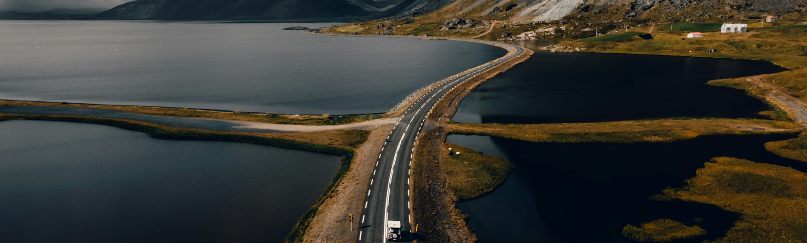
VIDEO COLLECTIONIceland, in Motion
EXPLORE VIDEOS
Iceland through the lens of adventure
-
AURORA & NIGHT SKY Witness the mystical dance of lights painting the pitch-black night sky in Iceland
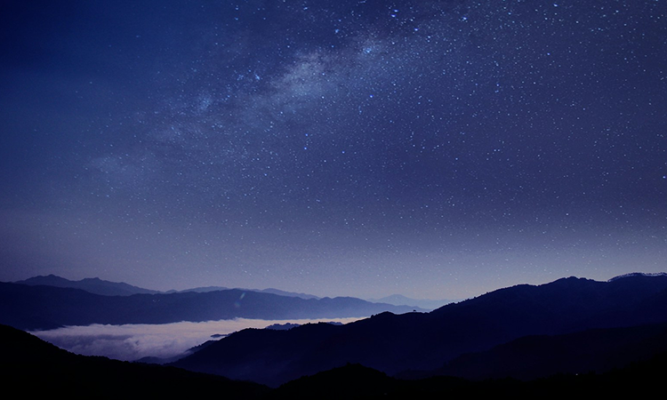
-
WILDLIFE Meet Iceland's unique wildlife, from puffins to reindeer, thriving freely in untouched nature
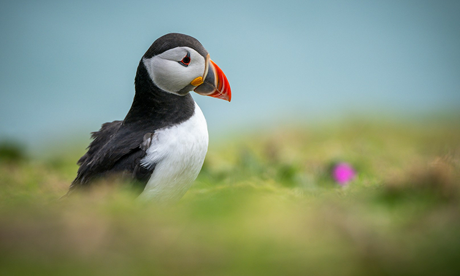
-
GLACIERS & ICE CAVES Explore breathtaking glaciers and mesmerizing blue ice caves sculpted over thousands of years
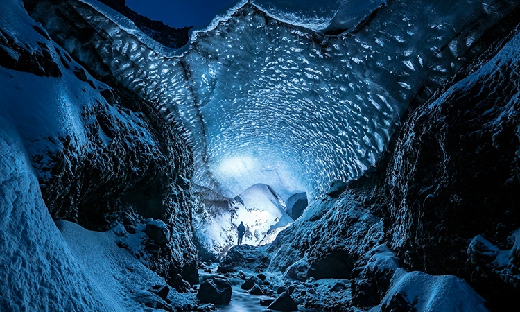
-
TRAVEL VLOGS Follow along the Ring Road with authentic travel diaries and unforgettable moments on the road
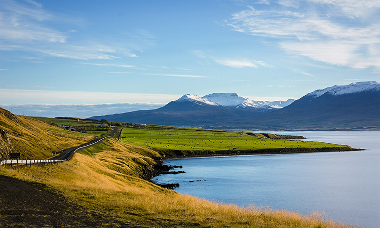
-
Cascades & Geysers Feel the raw, dynamic energy of thundering waterfalls and erupting geysers across the island
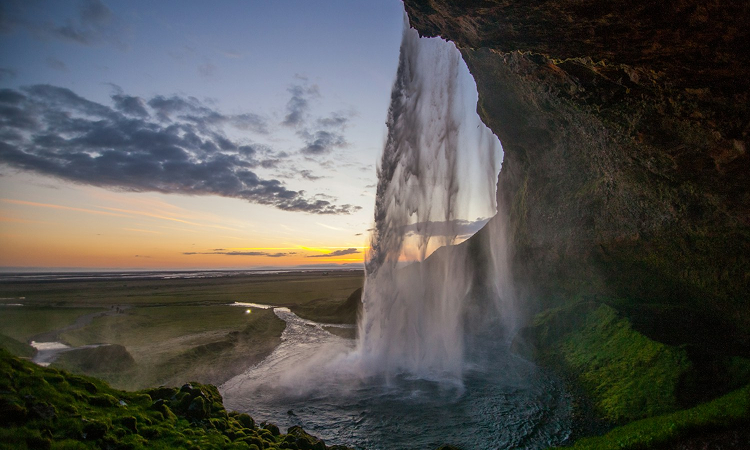
-
LOCAL LIFE Discover the cozy, authentic daily lives of locals living in harmony with the rugged Nordic landscape
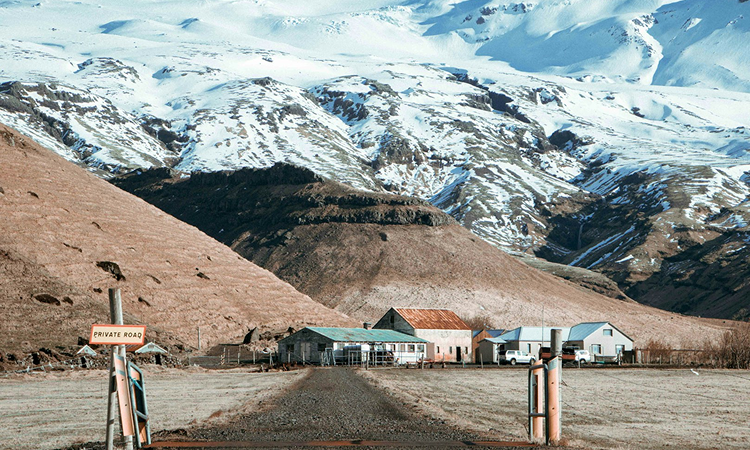
-
ICELANDIC FOOD Savor the unique flavors of Iceland, from fresh Arctic seafood to traditional local delicacies
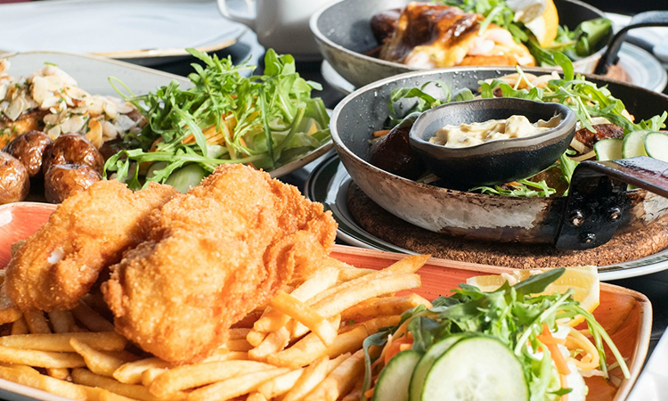
-
FOUR SEASONS Experience Iceland dramatic transformation through the year, from midnight sun summers to snowy winters
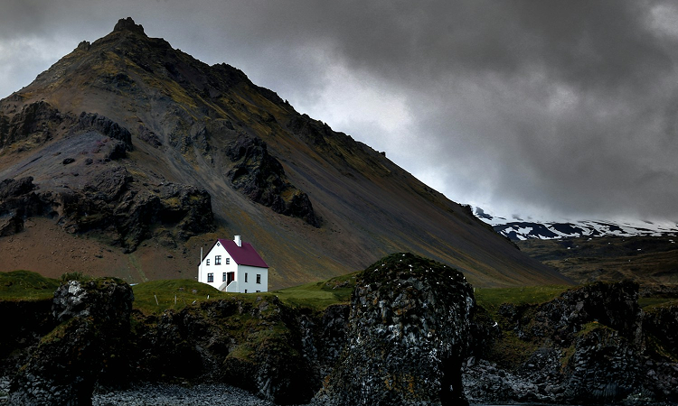
-
Northern Lights Witness the mystical green lights dancing across the pitch-black Arctic night sky
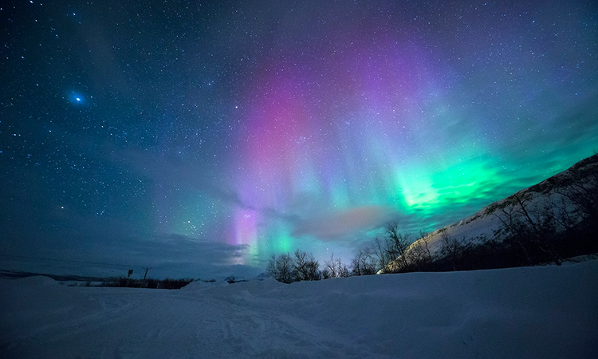
-
Fauna of Iceland Meet Iceland's resilient wildlife, from adorable coastal puffins to reindeer roaming the highlands
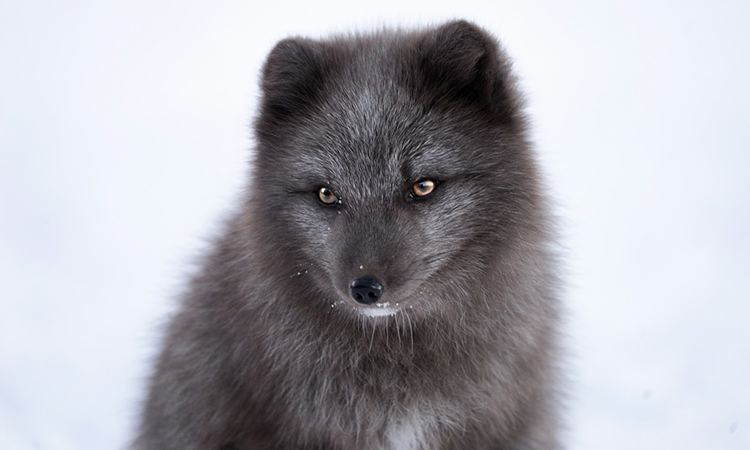
-
Road Trip Vlogs Follow along our Ring Road adventures with authentic, behind-the-scenes travel diaries
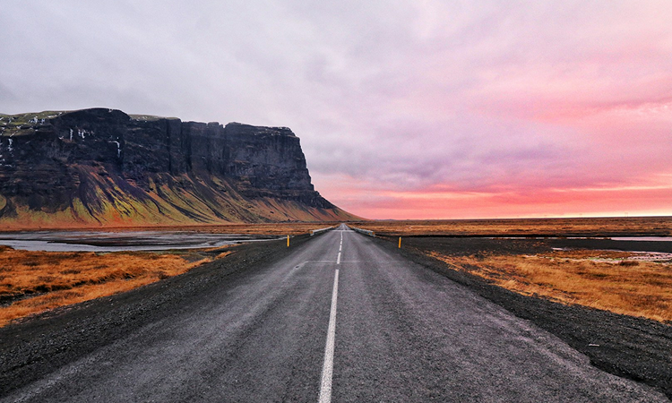
-
Taste of Iceland Savor the authentic flavors of Iceland, from fresh North Atlantic seafood to hearty traditional lamb dishes
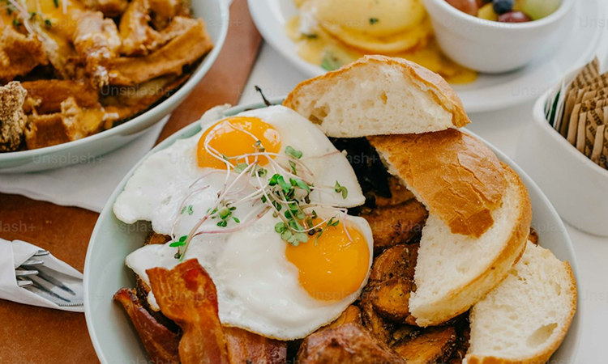